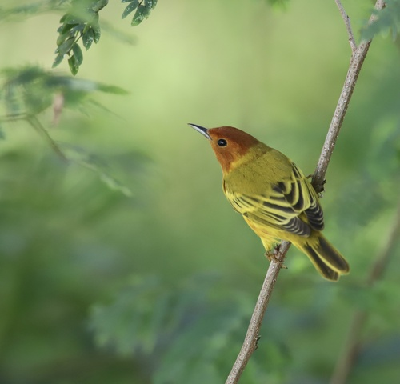

Yellow Warbler
Setophaga petechia bird

Bright yellow warbler that nests almost exclusively in willow and dogwood shrubs along streams and wetland edges.
4 documented plant relationships, 4 of them as a specialist with no alternative.
Setophaga petechia bird

Bright yellow warbler that nests almost exclusively in willow and dogwood shrubs along streams and wetland edges.
4 documented plant relationships, 4 of them as a specialist with no alternative.
 bobkennedy, some rights reserved (CC BY-SA), uploaded by bobkennedy")
 giantcicada, some rights reserved (CC BY), uploaded by giantcicada")
 Harvey Barrison, some rights reserved (CC BY-SA)")